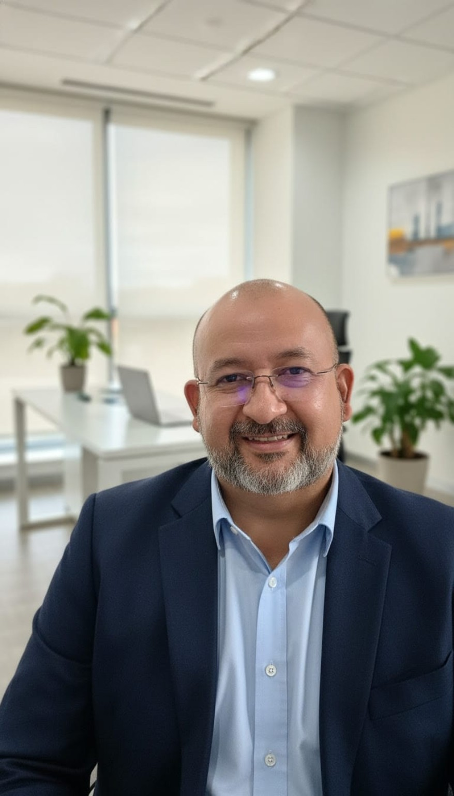

01
Discussões constantes
Conversas que começam pequenas e acabam em conflitos, sem que as questões sejam resolvidas.
A terapia de casal oferece um espaço de escuta e acolhimento para compreender conflitos, melhorar a comunicação e encontrar novos caminhos para a relação.
Conversar sobre o atendimento ↗Augusto Rebelo · Psicólogo · CRP 20/08760

Algumas dificuldades se repetem e parecem cada vez mais difíceis de resolver. A psicoterapia pode ajudar a compreender essas experiências com mais clareza.
Conversas que começam pequenas e acabam em conflitos, sem que as questões sejam resolvidas.
A sensação de que a parceria e a conexão estão se perdendo no cotidiano.
Quando expressar sentimentos e necessidades se torna uma tarefa delicada para ambos.
O atendimento considera a singularidade de cada pessoa, casal e família.
Um espaço de diálogo para lidar com conflitos, comunicação, confiança e decisões importantes sobre a relação.
Saiba mais ↗Acompanhamento voltado à compreensão de vínculos, convivência e desafios presentes nas relações familiares.
Saiba mais ↗Um ambiente de escuta e reflexão para lidar com emoções, relacionamentos e questões pessoais.
Saiba mais ↗
Psicólogo de Casal & Família · CRP 20/08760
Meu trabalho é oferecer um espaço de escuta, respeito e acolhimento para pessoas, casais e famílias que desejam compreender melhor seus desafios emocionais e relacionais.
Na psicoterapia, cada história é recebida com atenção às suas particularidades, sem julgamentos e sem respostas prontas.
Atendimentos online e presenciais em Manaus, Amazonas.
Entrar em contato ↗Um processo pensado para que você possa buscar informações e iniciar o acompanhamento com tranquilidade.
Envie uma mensagem pelo WhatsApp para esclarecer dúvidas sobre modalidades e disponibilidade.
Consulte a possibilidade de atendimento online ou presencial em Manaus.
O processo terapêutico é conduzido de acordo com as necessidades e características de cada atendimento.
Valores informados para atendimentos individuais e de casais. A frequência e a continuidade são conversadas conforme as necessidades de cada caso.
Para quem deseja iniciar o processo ou realizar uma sessão pontual.
Para quem busca continuidade e um espaço regular de acompanhamento.
Para quem deseja organizar um acompanhamento mais frequente e prolongado.
Os valores e formatos de acompanhamento são informativos e devem ser confirmados diretamente com o profissional. A indicação, frequência e continuidade das sessões dependem da avaliação profissional. A divulgação pública de preços e condições deve ser revisada pelo responsável à luz das orientações éticas do CFP/CRP antes do uso comercial.
Sim. Há atendimento online e presencial em Manaus, mediante disponibilidade e confirmação das condições com o profissional.
Sim. Além de terapia de casais e familiar, Augusto oferece psicoterapia individual.
As condições e a configuração do atendimento são discutidas com o profissional, considerando as necessidades de cada situação.
Entre em contato pelo WhatsApp para consultar agenda, modalidades e demais informações.
O trabalho psicológico segue os deveres éticos de sigilo profissional, observadas as exceções previstas nas normas aplicáveis.
Se deseja saber mais sobre o acompanhamento psicológico, entre em contato e consulte a disponibilidade para atendimento.
Agendar consulta pelo WhatsApp ↗